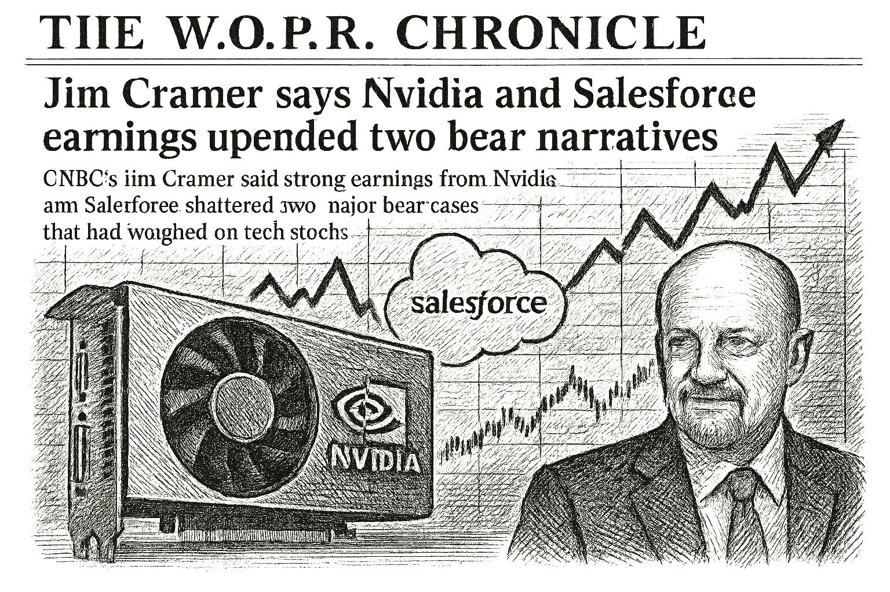

SPY
Current: $766.12Change: +2.65 (+0.35%)
Updated:
Source: yahoo_chartFreshness: fresh


CNBC’s Jim Cramer said strong earnings from Nvidia and Salesforce shattered two major bear cases that had weighed on the tech stocks.

Today's Headline: Jim Cramer says Nvidia and Salesforce earnings upended two bear narratives
Setup: CNBC’s Jim Cramer said strong earnings from Nvidia and Salesforce shattered two major bear cases that had weighed on the tech stocks.
Primary Topic: Nvidia Earnings
Specific Development: Nvidia reported a significant earnings beat, doubling its revenue expectations, which has positively impacted tech stocks.
Why Today Is Different: This earnings report has shifted market sentiment, contrasting with the broader mixed signals from other sectors.
Secondary Topics: Tech Stocks; Market Sentiment; Oil Prices
Tone: optimistic
Sectors: Technology; Energy; Consumer Discretionary
Companies: Nvidia; Broadcom; Dell
Commodities: Oil
Countries Or Regions: United States
Macro Themes: Earnings Season; Market Volatility
Why This Story: Nvidia's performance is pivotal in shaping tech sector dynamics, influencing investor strategies amid fluctuating market conditions.
Why This Matters: Jim Cramer says Nvidia and Salesforce earnings upended two bear narratives is the clearest current evidence-led frame for Joshua's observation-only review; missing facts remain explicit intelligence gaps.

Summary: Overnight, Nvidia's earnings report led to a surge in tech stocks, while oil prices rose amid geopolitical developments.
What Happened Overnight: Nvidia's strong earnings have propelled tech stocks higher, while oil prices increased due to geopolitical tensions.
What Changed Materially: Nvidia's earnings report has shifted market sentiment positively for tech stocks.
Which Assets Sectors Are Affected: Tech stocks are benefiting, while energy and consumer discretionary sectors face pressure.
Does It Look Like Noise Or A Real Regime Input: This appears to be a significant regime input rather than mere noise.
Why This Matters: The shift in tech stocks due to Nvidia's earnings could influence broader market trends and investor strategies.

DELL Earnings Expectations — 2026-09-01, After Close
Consensus EPS: $5.01
Year-ago EPS: unavailable
Expected EPS growth: unavailable
Consensus revenue: $45.9B
Year-ago revenue: unavailable
Expected revenue growth: unavailable
Source: finnhub_earnings_calendar · As of: 2026-08-31T13:59:19.957113+00:00 · Freshness: current
AVGO Earnings Expectations — 2026-09-02, After Close
Consensus EPS: $3.30
Year-ago EPS: unavailable
Expected EPS growth: unavailable
Consensus revenue: $29.9B
Year-ago revenue: unavailable
Expected revenue growth: unavailable
Source: finnhub_earnings_calendar · As of: 2026-08-31T13:59:19.957113+00:00 · Freshness: current

- WOPR learning pipeline: Collecting samples
- Candidates evaluated 24h: 0
- Current gate: Evidence
- Notification ledger events in 24h: 22
- Pending orders created/canceled/filled/expired: 8/4/0/0
- Pending lifecycle interpretation: Pending-order cancellations have trackable reasons and no obvious rapid churn pattern.
- Portfolio risk: Label: Moderate / Score: 60.5
- Latest intelligence gap report: intelligence_gap_report_2026-08-30.pdf
Why This Matters: The active gate is Evidence, so the key question is why candidates are stopping before approval, not how to force trades.

- Sentinel role: infrastructure and operational status only.
- State: ONLINE
- Last successful validation: 2026-08-31T14:14:49.899971+00:00
- Payloads accepted/rejected: 15753/0
- Node health score: 100
Why This Matters: Sentinel is ONLINE, so Joshua should use its context only to the extent the latest accepted pulse is fresh and authenticated.

CANDIDATES MOVING THROUGH JOSHUA'S INVESTMENT-REVIEW WORKFLOW
FROZEN DAILY BRIEF SNAPSHOT | 2026-08-31T14:14:05.764118+00:00
QUEUE SUMMARY | Investment Ready: 0 | Waiting for Price: 0 | Waiting for Evidence: 0 | Research Underway: 2 | Governance Hold: 4 | Monitor Only: 0
Investment-ready status: No candidates are currently Investment Ready.
#6 PLTR - Governance Hold [Moved Up 15->6]
Joshua's Thesis: Positive thesis not yet established.
Why Waiting: Governance gate has not cleared.
Price: 184.84 now; 126.93 preferred entry
What Unlocks It: Governance gate clears; Clear valuation support; Evidence that the business quality matches the risk being taken
Portfolio Fit: 60.5/100 — HIGH ↑
Portfolio Fit Drivers: projected Technology exposure 42.9%; projected AI software exposure 28.6%; candidate amount $100 vs $250 currently allocated
Candidate Risk: 21.5/100 — LOW ↓
Risk Drivers: projected Technology exposure 42.9%; projected AI software exposure 28.6%; candidate amount $100 vs $250 currently allocated
Next: Re-evaluate after the recorded gate clears. Owner: Columbo.
#7 DIA - Research Underway [Moved Up 16->7]
Joshua's Thesis: Positive thesis not yet established.
Why Waiting: Research evidence is still being gathered.
Price: Current price unavailable.; Preferred entry not established.
What Unlocks It: Clear valuation support; Evidence that the business quality matches the risk being taken; Independent evidence streams pointing the same way
Portfolio Fit: 87.9/100 — VERY HIGH ↑
Portfolio Fit Drivers: projected ETF exposure 28.6%; projected Broad market exposure 28.6%; candidate amount $100 vs $250 currently allocated
Candidate Risk: 4.1/100 — VERY LOW ↓
Risk Drivers: projected ETF exposure 28.6%; projected Broad market exposure 28.6%; candidate amount $100 vs $250 currently allocated
Next: Clear valuation support; Evidence that the business quality matches the risk being taken; Independent evidence streams pointing the same way. Owner: Columbo.
#12 AVGO - Research Underway [NEW]
Joshua's Thesis: Positive thesis not yet established.
Why Waiting: Research evidence is still being gathered.
Price: 368.14 now; 370.11 preferred entry
What Unlocks It: Clear valuation support; Evidence that the business quality matches the risk being taken; Independent evidence streams pointing the same way
Portfolio Fit: 11.7/100 — VERY LOW
Portfolio Fit Drivers: projected Technology exposure 42.9%; projected AI infrastructure exposure 42.9%; candidate amount $100 vs $250 currently allocated
Candidate Risk: 72.0/100 — HIGH
Risk Drivers: projected Technology exposure 42.9%; projected AI infrastructure exposure 42.9%; candidate amount $100 vs $250 currently allocated
Next: Fill before expires_at while entry conditions remain valid. Owner: Columbo.
#21 ANGX - Governance Hold [Moved Up 23->21]
Joshua's Thesis: Positive thesis not yet established.
Why Waiting: Governance gate has not cleared.
Price: 4.24 now; 4.23 preferred entry
What Unlocks It: Governance gate clears; Clear valuation support; Evidence that the business quality matches the risk being taken
Portfolio Fit: 8.4/100 — VERY LOW ↑
Portfolio Fit Drivers: projected Unclassified exposure 57.1%; projected Unclassified exposure 57.1%; candidate amount $100 vs $250 currently allocated
Candidate Risk: 73.6/100 — HIGH ↓
Risk Drivers: projected Unclassified exposure 57.1%; projected Unclassified exposure 57.1%; candidate amount $100 vs $250 currently allocated
Next: Re-evaluate after the recorded gate clears. Owner: Advisory Committee.
#24 RCL - Governance Hold [NEW]
Joshua's Thesis: Positive thesis not yet established.
Why Waiting: Governance gate has not cleared.
Price: 272.48 now; 282.98 preferred entry
What Unlocks It: Governance gate clears; Clear valuation support; Evidence that the business quality matches the risk being taken
Portfolio Fit: 8.4/100 — VERY LOW
Portfolio Fit Drivers: projected Unclassified exposure 57.1%; projected Unclassified exposure 57.1%; candidate amount $100 vs $250 currently allocated
Candidate Risk: 73.6/100 — HIGH
Risk Drivers: projected Unclassified exposure 57.1%; projected Unclassified exposure 57.1%; candidate amount $100 vs $250 currently allocated
Next: Re-evaluate after the recorded gate clears. Owner: Columbo.
#25 XRAY - Governance Hold [NEW]
Joshua's Thesis: Positive thesis not yet established.
Why Waiting: Governance gate has not cleared.
Price: 11.15 now; 11.10 preferred entry
What Unlocks It: Governance gate clears; Clear valuation support; Evidence that the business quality matches the risk being taken
Portfolio Fit: 8.4/100 — VERY LOW
Portfolio Fit Drivers: projected Unclassified exposure 57.1%; projected Unclassified exposure 57.1%; candidate amount $100 vs $250 currently allocated
Candidate Risk: 73.6/100 — HIGH
Risk Drivers: projected Unclassified exposure 57.1%; projected Unclassified exposure 57.1%; candidate amount $100 vs $250 currently allocated
Next: Re-evaluate after the recorded gate clears. Owner: Columbo.
Since the prior Chronicle: IONQ - Removed; QBTS - Removed; UUUU - Removed
Observation only. This section creates no recommendation, order, authority, or execution instruction.

- Which recorded governance requirement must clear before PLTR can advance?
- Which recorded missing evidence item would most change Joshua's current view of DIA?
- If AVGO reaches the recorded price condition <= 370.11, which recorded evidence and governance requirements would still remain?
- Which recorded governance requirement must clear before ANGX can advance?
- What DELL EPS or revenue result would materially change the current recorded thesis?

Nvidia's strong earnings have shifted investor sentiment positively towards tech stocks, contrasting with the mixed performance in other sectors. This divergence highlights the importance of sector-specific dynamics in shaping overall market trends.

Compared to: 2026-08-28
- Market weather: Elevated -> Balanced
- Top opportunity: DELL -> MARA
- Joshua gate: Still Evidence
- 2Y Treasury.last_price: 4.34 -> 4.34 (unchanged); 2Y Treasury.last_price changed 0.00% versus the prior frozen Chronicle snapshot.
- 2Y Treasury.percent_change: 3.3333333333333255 -> 3.3333333333333255 (unchanged); 2Y Treasury.percent_change changed 0.00% versus the prior frozen Chronicle snapshot.
- 10Y Treasury.last_price: 4.73 -> 4.73 (unchanged); 10Y Treasury.last_price changed 0.00% versus the prior frozen Chronicle snapshot.
- 10Y Treasury.percent_change: 1.2847965738758138 -> 1.2847965738758138 (unchanged); 10Y Treasury.percent_change changed 0.00% versus the prior frozen Chronicle snapshot.
- 30Y Treasury.last_price: 5.22 -> 5.22 (unchanged); 30Y Treasury.last_price changed 0.00% versus the prior frozen Chronicle snapshot.
- 30Y Treasury.percent_change: 0.5780346820809125 -> 0.5780346820809125 (unchanged); 30Y Treasury.percent_change changed 0.00% versus the prior frozen Chronicle snapshot.
- SPY.last_price: 766.29 -> 766.12 (down); SPY.last_price changed 0.02% versus the prior frozen Chronicle snapshot.
- SPY.percent_change: 0.369366183347078 -> 0.34709942761339374 (down); SPY.percent_change changed 6.03% versus the prior frozen Chronicle snapshot.
- QQQ.last_price: 715.025 -> 715.19 (up); QQQ.last_price changed 0.02% versus the prior frozen Chronicle snapshot.
- QQQ.percent_change: 1.2324442179182136 -> 1.2558047343980072 (up); QQQ.percent_change changed 1.90% versus the prior frozen Chronicle snapshot.
- IWM.last_price: 294.21 -> 293.495 (down); IWM.last_price changed 0.24% versus the prior frozen Chronicle snapshot.
- IWM.percent_change: -1.2618720005369828 -> -1.5018290431922752 (down); IWM.percent_change changed 19.02% versus the prior frozen Chronicle snapshot.

The strong earnings from Nvidia have shifted the focus back to tech, which was previously overshadowed by geopolitical tensions and oil price fluctuations.
No new warnings; however, the mixed performance in other sectors remains a point of caution.
Portfolio Construction Review
Current allocation: 249.94 allocated.
Largest sector: Unclassified at 40.0%.
Largest theme: Unclassified at 40.0%.
Diversification: Mixed (60.0).
Cash allocation: 75.0% unallocated.
Recommended exposure: MARA at portfolio-fit score 87.9.
Portfolio fit: MARA improves diversification while preserving portfolio fit.
Why This Matters: Portfolio Manager evaluates whether an opportunity improves this portfolio; it does not select the investment, vote, or authorize execution.

Monitor the implications of Nvidia's earnings on tech stocks and broader market sentiment.

| Can trigger trade | no |
| Can modify trade rules | no |
| Can add watch items | yes |
| Can add review questions | yes |
| Can adjust confidence notes | yes |
| Input policy | external_intelligence_plus_sanitized_internal_observations |
| External policy | The Editor-in-Chief synthesizes current world/market context where available and labels unknowns; provider/model provenance remains separate. |
| Internal policy | Joshua/WOPR/Sentinel facts are supplied as sanitized observation-only summaries. |
| Editorial model | gpt-4o-mini |
- Selected by a deterministic daily rotation through symbols already present in the persisted Chronicle snapshot.
- Related event on the canonical wire: AI Stocks Enter a High-Stakes Earnings Gauntlet
- Why Is Dell Stock Sliding Ahead of Q2 Earnings?
- Desk: earnings; source: Benzinga; linked symbols: DELL.
- Published: 8/28/26 05:12 MST.
- High-impact watch: Quarterly Financial Report--Retail Trade - 9/8/26 07:00 MST.
- Affected assets: US equities, Treasuries, USD; source: census_release_schedule.
- DELL earnings: September 1, 2026, after close.
- AVGO earnings: September 2, 2026, after close.
- Technology: 3.32% session performance; source: persisted sector ledger.
- Energy: 1.48% session performance; source: persisted sector ledger.
- Communication Services: -0.74% session performance; source: persisted sector ledger.
- ETHUSD: -2.88% recorded move; price: 2438.11.
- Session: 24h; catalyst status: no_verified_catalyst; source: yahoo_chart.
- Economic data releases next week; why it matters: They could influence market sentiment and investor strategies.
- State: narrow_leadership; score: 46.70/100; advance/decline ratio: 0.55.
- Above 50-day average: 58.80%; sample: 119; provider: sentinel_sampled_breadth.
- Decision outcomes evaluated: 16; currently untestable: 0.
- Warning review: still watching 3; confidence calibration: insufficient_sample.
- Current macro regime: narrow_mega_cap_risk_on; change probability: unavailable.
- Risk dashboard: neutral (50/100); breadth: narrow_leadership; sentiment: neutral.
- Scenario board only - a current-state observation, not a forecast or execution instruction.

- Hosts Making Money with Charles Payne and founded Wall Street Strategies to provide market research for individual investors.
- Published quotation: "The stock market is the greatest wealth-creation machine in history."
- Published framework: Look for leadership, improving fundamentals, innovation, and market participation while encouraging individuals to build knowledge, accept responsibility, and engage with long-term wealth creation.
- Committee lens: Payne contributes a growth-leadership and individual-opportunity lens, asking whether improving fundamentals and market recognition support the upside case.
- Public philosophy profile only; no participation, endorsement, or current recommendation is implied.
- What DELL EPS or revenue result would materially change the current recorded thesis?
- MARA: Current symbol-specific prediction confidence is unavailable.
- MARA: No canonical symbol-specific material event is linked.
- Attach the missing MARA evidence before the next committee review.
- Which recorded governance requirement must clear before PLTR can advance?
- Which recorded missing evidence item would most change Joshua's current view of DIA?
- If AVGO reaches the recorded price condition <= 370.11, which recorded evidence and governance requirements would still remain?
- Which recorded governance requirement must clear before ANGX can advance?
- Evidence agenda: MARA - Current symbol-specific prediction confidence is unavailable.
- Proposed review: Nvidia's stock performance post-earnings; why it matters: It will indicate whether the positive sentiment can sustain in the tech sector.
- Proposed review: Oil price movements; why it matters: Rising oil prices could impact inflation and consumer spending.
- Canonical instruments reviewed: 24; delayed 3, fresh 18, stale 3.
- Leading sources: yahoo_chart (21), treasury_official_yield_curve (3).
- Snapshot recorded: 8/31/26 06:59 MST.
Jim Cramer says Nvidia and Salesforce earnings upended two bear narratives
Storm meter: Balanced
#6 PLTR - Governance Hold [Moved Up 15->6]
Observation mode: observation_only
Watch: Nvidia's stock performance post-earnings; why it matters: It will indicate whether the positive sentiment can sustain in the tech sector.
Question: Which recorded governance requirement must clear before PLTR can advance?